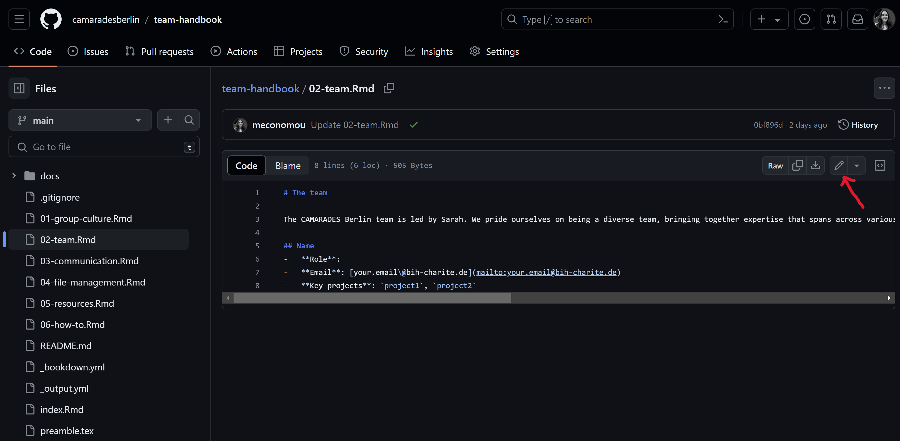
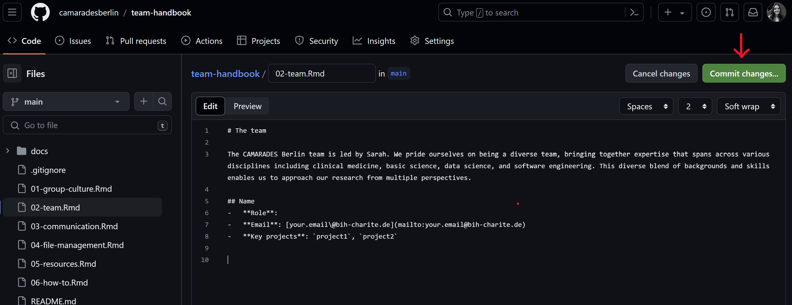

Chapter 7 How to
7.1 Contribute to this handbook
NOTE: Currently, the workflow for updating the handbook is semi-automated which means your edits will not be immediately visible in the online page of the handbook. As long as you commit your edits, there is no reason to worry about losing any work. The workflow will be udpated to fully automated very soon so that all edits are visible effective immediately.
The easiest way to edit the team handbook is via the GitHub user interface.
Navigate to the webpage of the public repository.
Click on the .Rmd file you want to edit. Keep in mind that each .Rmd file corresponds to one chapter. The welcome page text is found in
index.Rmd, while all other files are named after the corresponding chapter e.g.01-group-culture.Rmdor02-team.Rmd.Click on ‘Edit this file’.

- Add/edit content of file. The easiest way to do this is to write plain text and use simple Markdown syntax for formatting (e.g., to add (sub)headings, format italics or bold, add hyperlinks or pictures, bullet points etc). If unsure, you could have a look at how other files of the handbook are formatted or consult this or this Markdown cheat sheet. Please don’t hesitate to ask for support from the team if there any issues/questions. Once you’re happy with your changes click the ‘Commit changes’ button.

- You will be prompted to add a commit message. This should be a short and ideally informative message about the changes you’ve made to the file. A more detailed description can optionally be provided in the box below. To finalize your edits click on the ‘Commit changes’ button.